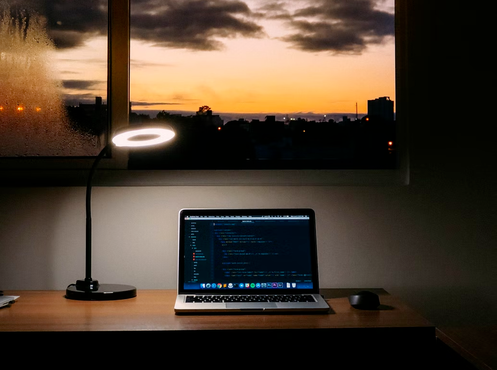

Journey: Becoming a self-taught Web Developer
Oct 1, 2022
After many failed sporadic attempts to learn programming after high school, I was discouraged and convinced myself that I did not have the intellect to be a decent programmer. But as paradoxical as this may sound, deep down, I also refused to believe in it.
Not only was I comparing myself with my peersm but I was judging my frustrations with the financial and academic success of my peers. Detrimental. What was worse, however, was being ignorant about the state I was putting myself into.
How I stay committed to learning
- Curiosity in understanding and applying logic
- A comprehensive curriculum led by amazing teachers
- A supportive community backed by peers and great mentors
How I got started
Word of mouth from a friend who had used Scrimba to learn React.
After trying out Scrimba's free HTML&CSS course, I was hooked. Scrimba made learning interactive, engaging, and fun.
I understand, applied, and absorbed more concepts through their screencasts than any other method I had tried before. It was effective, enjoyable, and sustainble. So, after a week, I started the Front End Developer Career Path.